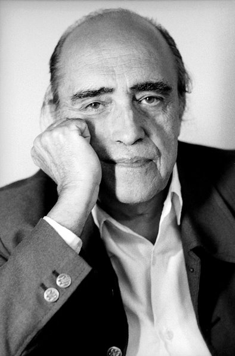
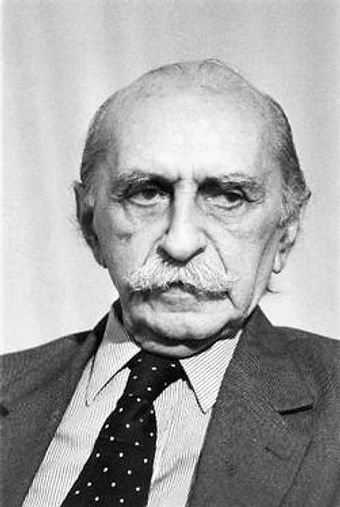
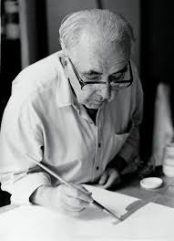

Brasília é a capital federal do Brasil e é uma das maiores cidades do país. Possui grande importância política, pois abriga a sede do Governo Federal. Além de ser um dos maiores cartões postais do país, por suabeleza natural e arquitetônica. "Brasília está situada no Planalto Central e surgiu após anos de questionamentos históricos e geográficos sobre a transferência de poder político do litoral para o interior do país, em algum ponto central. Fundada em 21 de abril de 1960, Brasília é palco de intensas transformações e repleta de diversidades, tanto do ponto de vista econômico, em relação à distribuição de renda, quanto do ponto de vista social, ao se analisar a população que contempla a capital e todo seu entorno, nas regiões administrativas."
Grandes Nomes

Oscar Niemeyer
Nascido no Rio de Janeiro em 1907 e consagrado como um dos mais respeitados arquitetos em todo o mundo, Oscar Niemeyer foi decisivo na concepção e realização de Brasília. O concreto armado que se apresenta plástico e suspenso no ar, as linhas sinuosas que parecem desafiar as leis da física.

Lúcio Costa
Lúcio Costa (1902-1998) foi Arquiteto e Urbanista brasileiro. Autor do projeto do Plano Piloto da Cidade de Brasília, a capital do Brasil, obra que o consagrou como urbanista.

Athos Bulcão
Em 1939, Athos Bulcão Brasília abandonou os estudos em medicina para dedicar-se à pintura. Em 1944, realizou a primeira mostra na inauguração da sede do Instituto dos Arquitetos do Brasil. Em 1952, passou a recortar imagens fotográficas de origens diversas e montou novos conjuntos por ele fotografados. Em 1955, Athos Bulcão passou a trabalhar com o arquiteto Oscar Niemeyer e, em 1957, passou a integrar o grupo responsável pela arquitetura e decoração de Brasília.
Galeria
Na arquitetura de Brasília, temos grandes monumentos, como: Congresso Nacional, Catedral de Brasília, Palácio do Itamaraty, Memorial JK, entre outros.